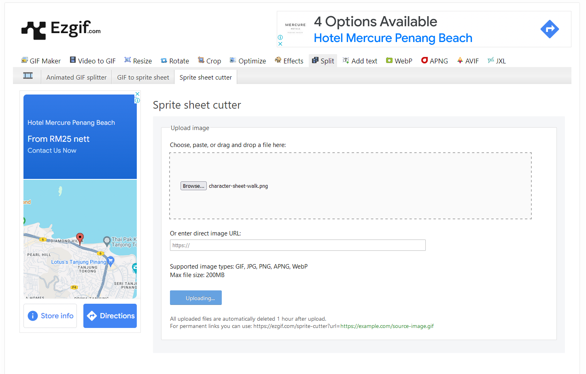
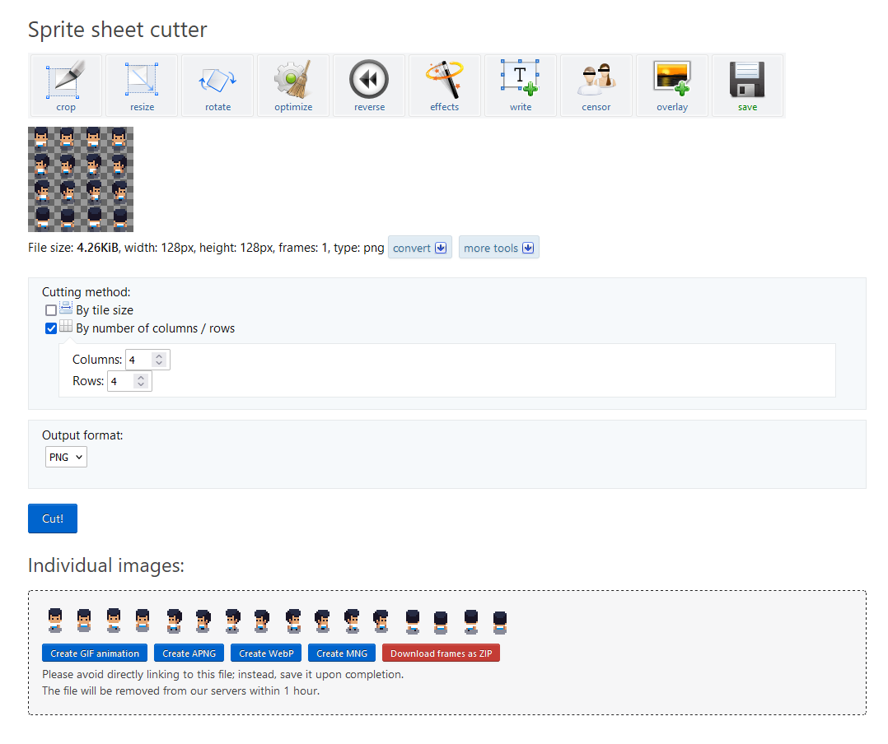

Step 1:
Once you have gone into your unzipped assets folder, you will see a sprite sheet like the one above. When you downloaded sprite resources,you will normally see sprites come in sprite sheets.
Step 2:
You can cut this sprite sheet into individual .png images by using an online sprite cutter from
ezgif

Upload your sprite sheet.
Step 3:
Once you have uploaded your sprite sheet, select "cut by number of columns/rows", enter 4x4 depending on your sprite sheet and click on the "CUT" button.
Step 4:
Then click on the red "Download frames as zip button"
Step 5:
Unzip the file and you will see a folder with frames for a walking character in 4 directions.